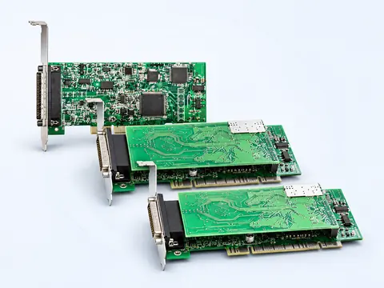

Новая система
Перед выбором платы подтвердить у МДИС актуальную доступность модификации, совместимость с современной компьютерной платформой и поддерживаемой версией ПО.
Интерфейс между линиями связи и системой записи
Семейства Ph-200, Ph-500 и Ph-600 подключают разные типы физических линий к компьютерной платформе МЦКРС «Фантом». Выбор платы зависит от интерфейса связи, количества каналов и совместимости с используемой компьютерной платформой.
Три семейства плат

Ph-200 · Ph-500 · Ph-600 — визуализация семейств интерфейсных плат
Подбор
| Семейство | Тип линий | Опубликованные варианты |
|---|---|---|
| Ph-200 | Аналоговые линии | 2 / 4 / 6 / 8 каналов |
| Ph-500 | Цифровые абонентские линии / ISDN BRI | 3 / 6 / 9 / 12 каналов |
| Ph-600 | Потоки E1 | 1 / 2 потока |
Платы не являются взаимозаменяемыми только по количеству каналов: выбор определяется типом линии, требуемым интерфейсом и совместимостью с компьютерной платформой.
Опубликованные спецификации включают платы с интерфейсами PCI и PCI-E. Перед проектированием новой системы необходимо подтвердить доступность конкретной модификации, совместимость с компьютерной платформой и поддерживаемой версией ПО «Фантом».
Аналоговые линии
Семейство Ph-200 предназначено для записи аналоговых линий и других аналоговых источников сигнала. Опубликованы варианты на 2, 4, 6 и 8 каналов.
| Модель | Каналы | Интерфейс ПК |
|---|---|---|
| PH-232 | 2 | PCI 32-bit v.2.3 |
| PH-234 | 4 | PCI 32-bit v.2.3 |
| PH-236 | 6 | PCI 32-bit v.2.3 |
| PH-238 | 8 | PCI 32-bit v.2.3 |
| PH-232 PCI-E | 2 | PCI-E x1 v.2.1 |
| PH-234 PCI-E | 4 | PCI-E x1 v.2.1 |
| PH-236 PCI-E | 6 | PCI-E x1 v.2.1 |
| PH-238 PCI-E | 8 | PCI-E x1 v.2.1 |
| Параметр | Опубликованное значение |
|---|---|
| Каналы | 2 / 4 / 6 / 8 |
| Подключение | Параллельное |
| Интерфейс ПК | PCI 2.3 / PCI-E 2.1 в зависимости от модификации |
| Разрядность АЦП | 16 бит |
| Частота дискретизации | 8 / 16 кГц |
| Входной разъём | DB-25 |
| Регулируемое усиление | До 22,5 дБ |
| Отношение сигнал/шум | 60 дБ |
| Диапазон при 8 кГц | 300–3400 Гц |
| Диапазон при 16 кГц | 300–6800 Гц |
| Компрессия | μ-law / A-law / GSM 6.10 |
Параллельное подключение к линии. В опубликованной спецификации указаны аналоговые телефонные линии, 2- и 3-проводные микрофоны и линейные выходы аппаратуры. Электрические параметры подключения проверяются отдельно.
Опубликовано определение DTMF, импульсного набора, АОН и Caller ID; доступность отдельных функций зависит от линии и конфигурации.
Эти сведения помогают идентифицировать и сопровождать установленную плату; они не являются гарантированным составом новой поставки.
Цифровые линии
Семейство Ph-500 предназначено для цифровых абонентских линий УАТС, включая ISDN BRI и сходные по сценарию цифровые интерфейсы. Опубликованы модификации на 3, 6, 9 и 12 каналов.
| Модель | Каналы | Интерфейс |
|---|---|---|
| PH-523 | 3 | Цифровые ISDN BRI, PCI 32-bit v.2.3 |
| PH-526 | 6 | Цифровые ISDN BRI, PCI 32-bit v.2.3 |
| PH-529 | 9 | Цифровые ISDN BRI, PCI 32-bit v.2.3 |
| PH-5212 | 12 | Цифровые ISDN BRI, PCI 32-bit v.2.3 |
| Параметр | Опубликованное значение |
|---|---|
| Каналы | Шаг 3: 3 / 6 / 9 / 12 |
| Плат на систему | До 16 в опубликованной конфигурации |
| Подключение | Параллельное |
| Шина | PCI |
| Компрессия | GSM 6.10, μ-law / A-law ИКМ при 8 кГц |
| АРУ | Программно отключаемое / настраиваемое |
Значение «до 16 плат» относится к опубликованной платформе и не должно использоваться как современный максимум без проверки доступных PCI-слотов, драйверов и поддерживаемой компьютерной конфигурации.
Это примеры из документации, а не подтверждение совместимости с любой новой УАТС.
Данные относятся к опубликованной аппаратной реализации.
Потоки E1
Семейство Ph-600 предназначено для записи одного или двух потоков E1 при параллельном или терминальном подключении.
| Модель | Потоки | Описание |
|---|---|---|
| PH-622 | 1 | E1, ISDN PRI, PCI 32-bit v.2.3 |
| PH-624 | 2 | E1, ISDN PRI, PCI 32-bit v.2.3 |
| Параметр | Опубликованное значение |
|---|---|
| Потоки | 1 / 2 E1 |
| Подключение | Параллельное / терминальное |
| Форм-фактор | Низкопрофильная короткая PCI-плата |
| Шина | PCI 2.3 |
| Разъём | DB-25 |
| DTMF | Опубликовано распознавание DTMF |
| Компрессия | GSM 6.10, μ-law / A-law ИКМ при 8 кГц |
| Сигнализация | Euro ISDN (EDSS1), Q-SIG, CorNet |
Параметры ниже полезны для обслуживания существующей системы.
Архитектура
Архитектура плат Phantom предусматривает аппаратную обработку части задач непосредственно на интерфейсной плате. В опубликованных спецификациях упоминаются компрессия аудио, DTMF и обработка сигнализации. Это разгружает компьютерную платформу и помогает стабильнее работать с временными параметрами физических линий.
Размещение
Платы Phantom могут использоваться как основа системы, установленной непосредственно в совместимую компьютерную платформу. Такой вариант отличается от готовых систем Phantom PC, MICRO и Phantom Pro: заказчик получает не отдельный регистратор в законченном корпусе, а интерфейсный компонент для построения конфигурации.
Для новой системы необходимо заранее проверить форм-фактор, доступные PCI/PCI-E слоты, драйверы, версию ПО «Фантом» и электрические параметры подключаемых линий.
Выбор поставки
Перед выбором платы подтвердить у МДИС актуальную доступность модификации, совместимость с современной компьютерной платформой и поддерживаемой версией ПО.
Опубликованные характеристики, обозначения моделей и схемы подключения полезны при идентификации установленных плат, модернизации и техническом сопровождении.
Документы
Инструкции по аналоговым и цифровым линиям, установке плат и схемам подключения.
Документация Phantom 4 и схема PH_DB25 connection для семейств интерфейсных плат.
Применение
МЦКРС «Фантом» внесён в реестр российской промышленной продукции Минпромторга. Реестровый номер – 10838442. Дата внесения – 21 мая 2026 года. Опубликованный срок действия заключения – до 20 мая 2029 года.
Реестровая запись относится к комплексу «Фантом» в целом; применимость к конкретной конфигурации с платами Ph-200, Ph-500 или Ph-600 необходимо подтверждать по спецификации поставки.
Новость МДИС →Консультация инженера
Для выбора нужны тип подключаемых линий, количество каналов, модель АТС или оборудования связи, версия ПО «Фантом» и характеристики компьютера, в который планируется установка. Инженеры МДИС помогут определить подходящее семейство платы и проверить совместимость конфигурации.